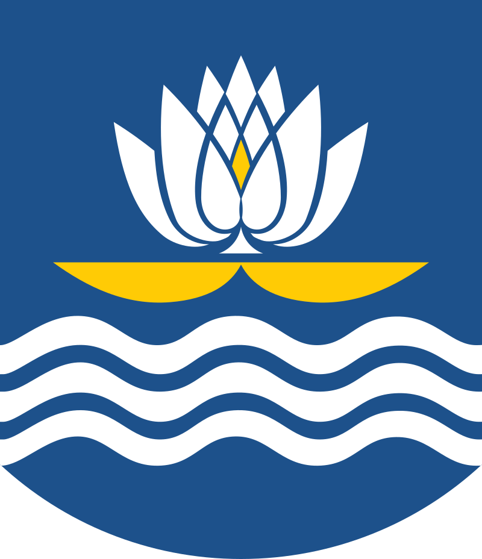

В Республике Беларусь имеется шесть областей. Самая северная - Витебская. В ней находится один из главных промышленных городов страны - город Новополоцк. Расположен на левом берегу Западной Двины, в 6 км к западу от Полоцка.
Основан город в 1958 году
Население 97 182 человек
Площадь 57,2729 км.кв.